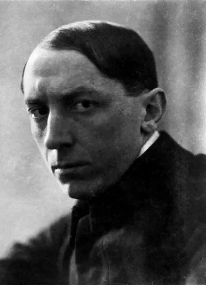

“La ville se lève” est un tableau réalisé entre 1910 et 1911 par le peintre italien Umberto Boccioni.
Boccioni a peint ce tableau d’après la vue de Milan qu’il avait depuis le balcon de la maison qu’il habitait.
Bien que pas très différent de ses plusieurs œuvres antérieures centrées sur les banlieues et en dépit de la présence d’éléments réalistes, tels que la construction, et l’espace rendu par la perspective, ce tableau est considéré comme la première œuvre vraiment futuriste d’Umberto Boccioni.
Analyse de l’œuvre
La banlieue et l’environnement urbain en général ont constitué la base d’un grand nombre de tableaux de Boccioni.
Ce tableau dépeint la construction d’une nouvelle ville, avec ses développements et la technologie. Des bâtiments en construction dans la banlieue avec des cheminées sont visibles dans la partie supérieure, mais la majeure partie de l’espace est occupé par des hommes et des chevaux fondus ensemble dans un effort dynamique.
Boccioni souligne ainsi certains des éléments les plus typiques du futurisme, comme l’exaltation du travail humain et l’importance de la ville moderne, construite autour du confort moderne.
Dans La ville se lève, Boccioni remplace en partie la vision naturaliste de ses œuvres antérieures par une vision plus dynamique. L’exaltation visuelle de la force et du mouvement, dont les protagonistes sont des hommes et des chevaux et non des machines répond parfaitement à la ligne de l’esprit futuriste.
Ce détail est celui qui est considéré comme attestant du fait que Boccioni évolue encore à l’intérieur du symbolisme, qui rend le mythe visible à travers l’image, mais il change ce “ mythe “ en le détachant de l’archaïque exploration psychologique du monde humain, pour le réassigner au mythe de l’homme moderne, créateur d’un monde nouveau.

Photographie du peintre
En d’autres termes, l’intention de l’artiste est de dépeindre le produit de l’époque industrielle en faisant passer le sujet de la représentation d’un moment normal de travail dans une cour quelconque à la célébration de l’idée de progrès industriel avec son avancée implacable, ce que résume la représentation du cheval inutilement retenu par les hommes accrochés à sa bride.